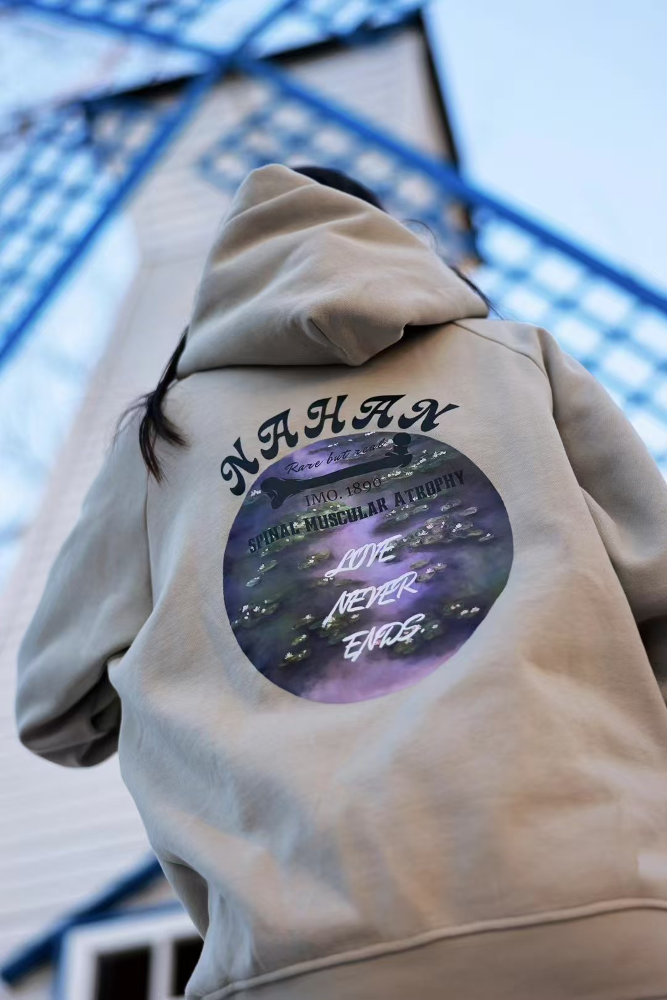

Project Overview
I founded NAHAN Charity Apparel to connect an apparel business with a charitable purpose. The project gave me the opportunity to explore how products and communication can encourage people to support a cause.

The Challenge
Starting the project involved more than developing a product idea. I needed to communicate with suppliers, introduce the project to customers, and explain its charitable purpose clearly. These responsibilities required organization and consistent communication.
My Role
As the founder, I worked on marketing, supplier communication, sales, and customer engagement. This allowed me to experience different parts of running a small project and understand how they connect.
Marketing and Communication
My marketing work involved introducing the apparel project and communicating its purpose. I learned the importance of explaining both the product and the cause in a way that customers could understand.
Supplier and Customer Relationships
Communicating with suppliers and customers helped me develop my relationship management skills. I gained experience discussing product needs, answering questions, and sharing information clearly.
What I Learned
Through NAHAN, I gained practical experience in marketing, sales, and project coordination. I learned that a clear purpose needs to be supported by careful planning and reliable communication.
This experience strengthened my interest in projects that combine business with positive social impact.
Back to Selected Work